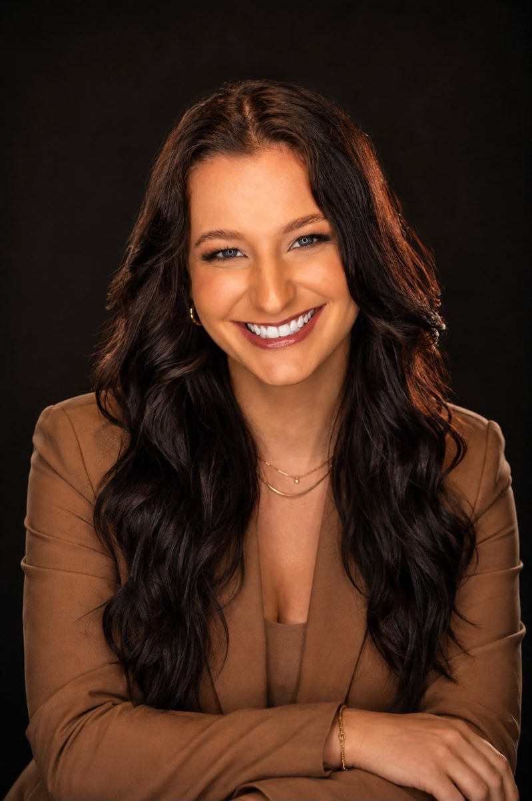
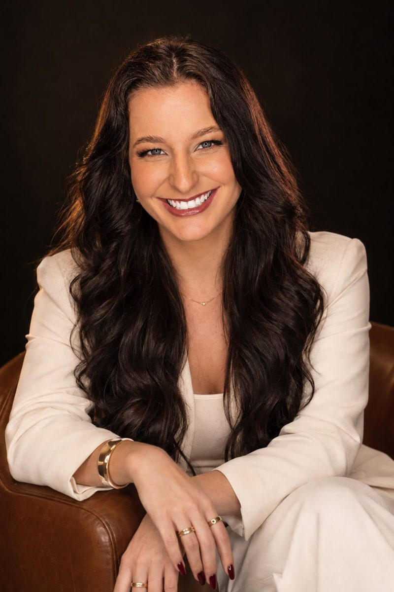

Com um acompanhamento nutricional individualizado de 90 dias, você constrói uma estratégia alinhada ao seu objetivo, à sua rotina e à forma como você realmente vive.
Converse com a Tainá pelo WhatsApp e entenda como funciona.

Você começa motivado, organiza a alimentação e promete que dessa vez vai fazer tudo certo.
Chega um jantar, um compromisso, uma semana corrida ou simplesmente a vontade de comer algo diferente.
Você sente que “saiu da dieta” e começa a pensar que todo o esforço da semana foi perdido.
Você deixa para voltar na segunda-feira e começa novamente do zero.
Uma alimentação que só funciona quando sua rotina está perfeita dificilmente será sustentável.
O objetivo é construir uma estratégia que continue funcionando mesmo quando existem finais de semana, compromissos, viagens e imprevistos.
“Sua alimentação precisa caber na sua vida. Não o contrário.”
Não é sobre receber uma dieta e tentar se virar sozinho. Durante 90 dias, você tem uma estratégia personalizada, acompanhamento da sua evolução e ajustes ao longo do processo.
Seu planejamento é construído considerando seu objetivo, rotina, preferências, horários e dificuldades.
Sua evolução é acompanhada durante o processo para identificar o que está funcionando e o que precisa ser ajustado.
Conforme seu corpo responde e sua rotina muda, a estratégia também pode evoluir com você.

Eu sou Tainá Franczak, nutricionista, e acredito que um bom planejamento nutricional precisa funcionar muito além do papel.
Por isso, meu trabalho começa entendendo sua rotina, seus objetivos, suas preferências e suas dificuldades. A partir disso, construímos uma estratégia individualizada e acompanhamos sua evolução durante todo o processo.
Porque você não precisa de mais uma dieta impossível de manter. Precisa de uma estratégia que funcione na sua vida.
Conversar com a TaináDaqui a 90 dias, o calendário terá avançado de qualquer forma. A pergunta é: como você quer chegar lá?
Recomeçando mais uma dieta depois de passar pelo mesmo ciclo? Ou já tendo passado por três meses de acompanhamento, ajustes e evolução?
Você não precisa esperar a próxima segunda-feira para começar de novo.
Seus próximos 90 dias podem ser diferentes.
Não. O planejamento considera sua rotina, preferências e objetivo. A proposta não é eliminar tudo aquilo que você gosta, mas encontrar uma estratégia que permita evoluir sem viver em restrição.
Durante os 90 dias, você recebe uma estratégia personalizada e tem sua evolução acompanhada. Conforme necessário, são realizados ajustes para que o planejamento continue fazendo sentido para sua realidade.
Sim. O acompanhamento pode ser realizado online, permitindo que você participe de qualquer região do país.
Não necessariamente. O planejamento é construído de acordo com o seu objetivo e sua realidade. Caso você treine, sua rotina de exercícios também será considerada.
O investimento e todas as informações sobre o acompanhamento são apresentados diretamente pelo WhatsApp.
Porque consistência exige tempo. Ao longo dos 90 dias, é possível acompanhar sua evolução, entender sua resposta à estratégia e realizar os ajustes necessários durante o processo.
Você pode continuar repetindo o ciclo de começar, parar e recomeçar. Ou pode passar os próximos 90 dias seguindo uma estratégia construída para o seu objetivo, sua rotina e a vida que você realmente leva.
Quero começar meus 90 diasClique no botão e fale com a Tainá pelo WhatsApp.